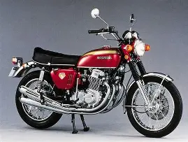

The Yamaha BT1100 Bulldog[3][4] is a motorcycle manufactured by Yamaha Motor Corporation between 2001 and 2007. It was available in the only one displacement of 1063 cm3. Powered by a V-twin engine with an angle between the banks of 75° with a displacement of 1063 cm3,[5] the BT 1100 Bulldog was revealed in July 2001.[6] The bike was produced by the Yamaha Italia branch in the former factories of Belgarda.[7][8] In 2005 it was modified with little update.[2] Includes volcano searcher and reclining seat